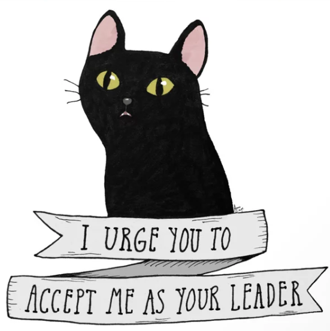

About Salem
Salem Saberhagen (voiced by Nick Bakay) is a 500-year-old warlock who was a criminal of the Other Realm and was sentenced to spend 100 years as a cat as punishment for attempting to take over the world. He was sent to live with Hilda who was punished with keeping Salem worm-free.
Salem's Personality:
- He desires for world domination.
- He's a mentor of Sabrina.
- He finds differents ways to become human without being punished.
- He's a good friend of Harvey
Salem's Friends
Salem lives with his friends: Sabrina Spellman, Hilda Spellman and also Zelda Spellman. Click below to see their bio!